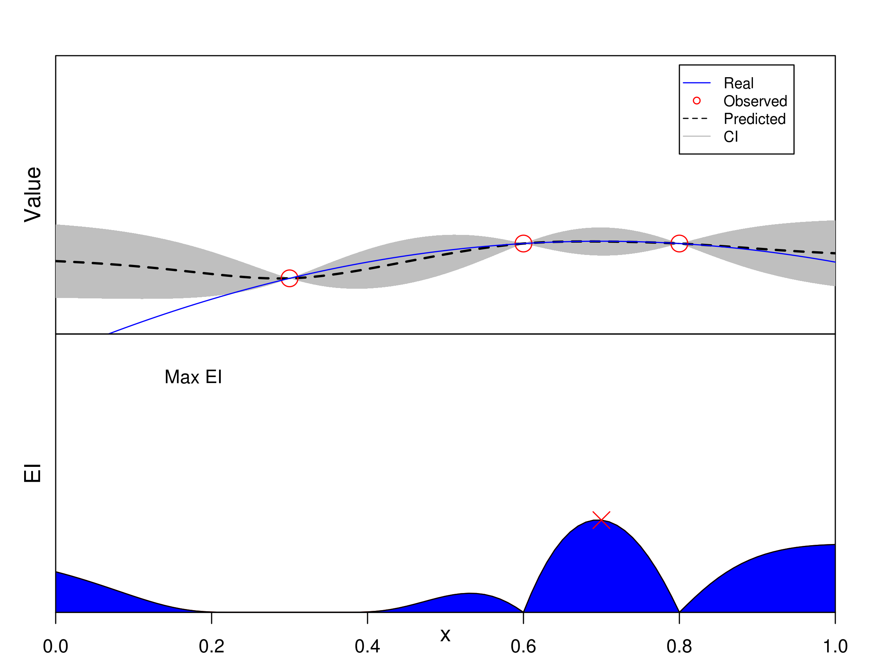

Bayesian Optimization (BO)¶
In classical Bayesian optimization, trials are sequentially sampled one-point-at-a-time through maximizing the expected improvement (EI). Let’s see a univariate example.
{kind=link}
Classical BO Methods¶
GP-EI ([Snoek2012]): use Gaussian process as surrogate model and EI as acquisition function.
SMAC ([Hutter2011]): use random forest as surrogate model and EI as acquisition function.
TPE ([Bergstra2011]): abbreviation of Tree-structured Parzen Estimator. It also uses EI as acquisition function but non-parametric method is employed to model \(p(x|y)\) and \(p(y)\) (the prior is not of interest actually) instead of \(p(y|x)\).
The corresponding python implementations:
Spearmint (GP-EI): https://github.com/JasperSnoek/spearmint
Hyperopt (TPE): https://github.com/hyperopt/hyperopt
Pros and Cons¶
Strength
New experiments can be easily added and the number or experiments does not need to be prespecified.
Evaluation information can be utilized and thus make the optimization process more efficient as compared to one-shot batch designs.
The commonly used acquisition function can balance the two goals of exploration and exploitation.
Limitation
The meta-modeling and acquisition function optimization are difficult for high-dimensional problems.
Lack uniformity considerations: algorithm can be trapped into local areas if without a good initialization.
Bayesian optimization are designed to select trials one-by-one, which is unnatural to perform parallelization (Note BO can be paralleled via proposing more than one trial at a time. However, these tricks, e.g., by assigning a average value to the pending trials, are not natural and may harm the optimization performance).
Example Usage¶
We provide an unified interface to call the GPEI, SMAC and TPE methods, base on their open source implementation of spearmint, hyperopt and smac3.
GP-EI:
import numpy as np
from sklearn import svm
from sklearn import datasets
from sklearn.model_selection import KFold
from sklearn.preprocessing import MinMaxScaler
from sklearn.metrics import make_scorer, accuracy_score
from seqmml import GPEIOPT
sx = MinMaxScaler()
dt = datasets.load_breast_cancer()
x = sx.fit_transform(dt.data)
y = dt.target
ParaSpace = {'C': {'Type': 'continuous', 'Range': [-6, 16], 'Wrapper': np.exp2},
'gamma': {'Type': 'continuous', 'Range': [-16, 6], 'Wrapper': np.exp2}}
estimator = svm.SVC()
score_metric = make_scorer(accuracy_score, True)
cv = KFold(n_splits=5, random_state=0, shuffle=True)
clf = GPEIOPT(ParaSpace, max_runs = 100, estimator = estimator, cv = cv, refit = True, scoring = score_metric, verbose = True)
clf.fit(x, y)
clf.plot_scores()
SMAC:
import numpy as np
from sklearn import svm
from sklearn import datasets
from matplotlib import pylab as plt
from sklearn.model_selection import KFold
from sklearn.preprocessing import MinMaxScaler
from sklearn.model_selection import cross_val_score
from sklearn.metrics import make_scorer, accuracy_score
from seqmml import SMACOPT
sx = MinMaxScaler()
dt = datasets.load_breast_cancer()
x = sx.fit_transform(dt.data)
y = dt.target
ParaSpace = {'C': {'Type': 'continuous', 'Range': [-6, 16], 'Wrapper': np.exp2},
'gamma': {'Type': 'continuous', 'Range': [-16, 6], 'Wrapper': np.exp2}}
estimator = svm.SVC()
score_metric = make_scorer(accuracy_score, True)
cv = KFold(n_splits=5, random_state=0, shuffle=True)
clf = SMACOPT(ParaSpace, max_runs = 100, estimator = estimator, cv = cv, refit = True, scoring = score_metric, verbose = True)
clf.fit(x, y)
clf.plot_scores()
TPE:
import numpy as np
from sklearn import svm
from sklearn import datasets
from matplotlib import pylab as plt
from sklearn.model_selection import KFold
from sklearn.preprocessing import MinMaxScaler
from sklearn.model_selection import cross_val_score
from sklearn.metrics import make_scorer, accuracy_score
from seqmml import TPEOPT
sx = MinMaxScaler()
dt = datasets.load_breast_cancer()
x = sx.fit_transform(dt.data)
y = dt.target
ParaSpace = {'C': {'Type': 'continuous', 'Range': [-6, 16], 'Wrapper': np.exp2},
'gamma': {'Type': 'continuous', 'Range': [-16, 6], 'Wrapper': np.exp2}}
estimator = svm.SVC()
score_metric = make_scorer(accuracy_score, True)
cv = KFold(n_splits=5, random_state=0, shuffle=True)
clf = TPEOPT(ParaSpace, max_runs = 100, estimator = estimator, cv = cv, refit = True, scoring = score_metric, verbose = True)
clf.fit(x, y)
clf.plot_scores()